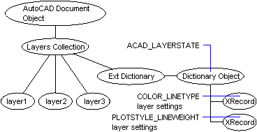

Autodesk AutoCAD 2021: ActiveX Developer's Guide > Create and Edit AutoCAD Entities > About Saving and Restoring Layer Settings (VBA/ActiveX) >
AutoCAD saves layer setting information in an extension dictionary in a drawing's Layers collection.
When you first save layer settings in a drawing, AutoCAD does the following:
Each time you save another layer setting in the drawing, AutoCAD creates another XRecord object describing the saved settings and stores the XRecord in the ACAD_LAYERSTATE dictionary. The following diagram illustrates the process.

You do not need (and should not try) to interpret XRecords when working with layer settings using ActiveX. Use the functions of the LayerStateManager object to access saved layer settings.
If layer settings have been saved in the current drawing, the following code lists the names of all saved layer settings:
Sub Ch4_ListStates()
On Error Resume Next
Dim oLSMDict As AcadDictionary
Dim XRec As Object
Dim layerstateNames As String
layerstateNames = ""
' Get the ACAD_LAYERSTATES dictionary, which is in the
' extension dictionary in the Layers object.
Set oLSMDict = ThisDrawing.Layers.GetExtensionDictionary.Item("ACAD_LAYERSTATES")
' List the name of each saved layer setting. Settings are
' stored as XRecords in the dictionary.
For Each XRec In oLSMDict
layerstateNames = layerstateNames + XRec.Name + vbCrLf
Next XRec
MsgBox "The saved layer settings in this drawing are: " + vbCrLf + layerstateNames
End Sub